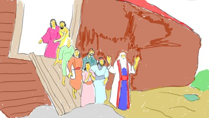
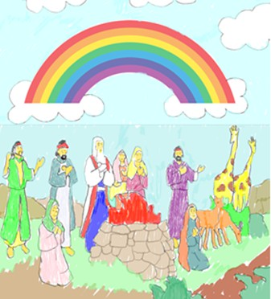
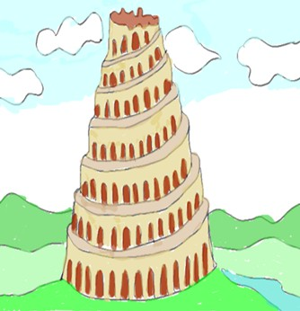
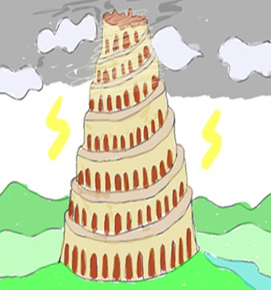
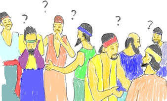
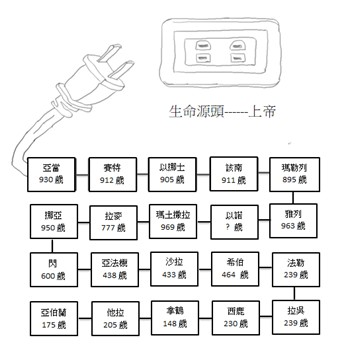

大雨過後, 大約一百五十天水勢才有開始稍退, 而到了兩百多天, 山頂才裸露出來; 不過, 要到一年多之後, 地才乾了. 於是, 神打開方的門, 並對挪亞說, 你們可以出方舟了. 挪亞 出方舟後的第一件事, 便是向神築壇獻祭. 神也因此用 “虹” 跟人立約, 從此不再用洪水毀滅世界了. 挪亞出了方舟之後, 人的生活 也有了改變, 不再以蔬果為生命的糧食, 現在神允許人可以吃肉, 但唯獨不能吃帶血的生肉. 然而, 神依然要求他們生養眾多, 遍滿全地.
到了閃的第四代(約一百多年左右), 神為什麼又得出手來審判全地呢? 當挪亞的後代越來越多, 人口開始要往東移的時候, 他們在示拿地遇見一片平原, 就是巴比倫平原, 人們便想在那地安居樂業, 長期定居下來. 於是, 他們就突發奇想, 想要蓋一座城和一座通天的塔, 目的是要傳揚並高舉自己, 讓人看到那高聳入雲端的巴別塔, 就能驚嘆他們的偉大; 再者, 這塔既可通天, 直達神的寶座, 就可以關閉天上的窗戶, 以致能躲避再一次的洪水毀滅世界, 因為他們根本不相信神用虹與人所立約, 不相信神不再用洪水毀滅世界. 他們蓋塔的目的是既想要做人想要做的事, 又想要抵擋神的管教, 也就是想做一些故意悖逆神心意的事 情, 然後異想天開, 以為可以做一些防護措施. 因此, 這次神派使者下來, 變亂所有人的口音, 人因為彼此無法溝通對話, 於是人的計畫就被迫暫停. <  不過, 人在世的壽命卻越來越短了. 當初亞當夏娃吃了禁果, 神就說吃了會死, 所以就開始記錄人死亡的年限, 從亞當、夏娃的時候, 人還可以活到九百多歲, 但到了亞伯蘭的時代, 只剩不到兩百歲了, 似乎人心離神越來越遠, 人的壽命也越來越短, 直到現在人的平均壽命只有在七八十歲. 當人吃了禁果的那一刻, 與神連接的電源源頭的插頭, 已被拔下來, 隨著生命的儲存能量越少, 壽命能存活的時間就更短. 但神並沒有希望人就在此畫下句點, 祂要恢復人與祂之間連結的生命, 可以存留到永恆的生命, 所以祂一直在為人類預備救恩之路, 隨著人的壽命越來越短, 救恩的實現越來越近.